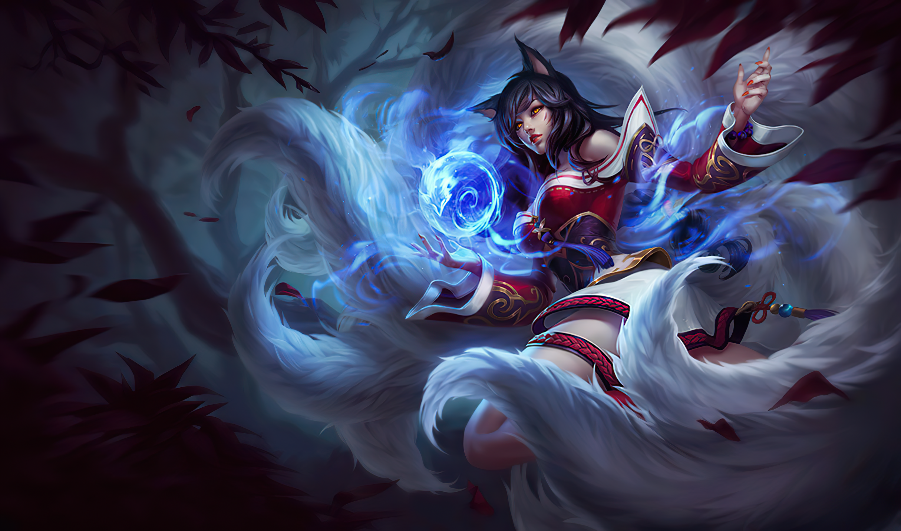
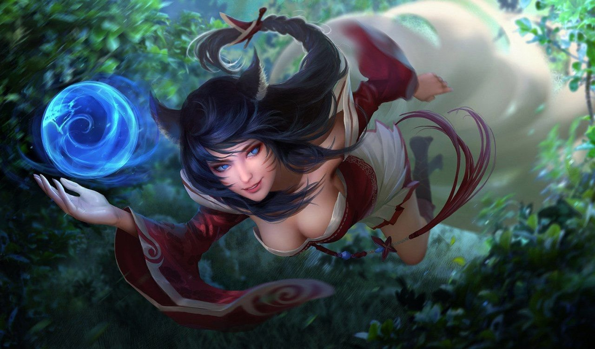

Истории

Ари
Биография
Ари – загадочная вастайи-лисичка, она с рождения
чувствует связь с магией мира духов и пытается найти
свое место в мире людей. Поселившись среди смертных,
она стала хищницей поневоле.
аываыв

Рассказ
Честная сделка
Автор: Райла Хейде
Ари не любит привлекать внимания.
Но и у уличной гадалки есть своя тайна...
Что же скрывает каждая из них?